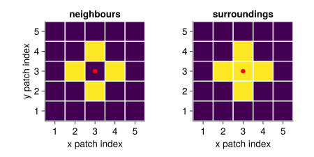
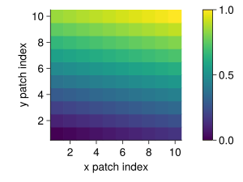

Initialization
The function initialization is called once at the beginning of the simulation. The traits of the species are generated, the parameters are initialized and the initial conditions of the state variables are set.
Furthermore, the neighbours and the surrounding (own patch and neighbours) are set for each patch with set_neighbours_surroundings!. This is needed for clonal growth.
GrasslandTraitSim.initialization — Functioninitialization(; input_obj, inf_p, calc)Initialize the simulation object.
GrasslandTraitSim.set_neighbours_surroundings! — Functionset_neighbours_surroundings!(; calc, input_obj)Define each patch's neighbouring and surrounding patches.

Initialization of traits
GrasslandTraitSim.random_traits! — Functionrandom_traits!(; calc, input_obj)Generate random traits for the simulation.
The traits are generated using a bivariate Gaussian mixture model with full covariance matrices. For each species either the first or the second Gaussian distribution is used to generate the log/logit-transformed traits. The traits are then backtransformed to the original scale and the units are added. Furthermore, the two traits specific leaf area (sla) and the root surface area per aboveground biomass (rsa_above) are calculated.
The Gaussian mixture model was fitted to the data with the function BayesianGaussianMixture of [1].
Overview of the traits:
| trait | unit | description | transformation |
|---|---|---|---|
la | mm² | leaf area | log |
lfm | mg | leaf fresh mass | log |
ldm | mg | leaf dry mass | log |
ba | - | biomass allocation | log |
srsa | m² g⁻¹ | specific root surface area | log |
amc | - | arbuscular mycorrhizal colonisation rate | logit |
height | m | plant height | log |
ldmpm | g g⁻¹ | leaf dry mass per plant dry mass | log |
lncm | mg g⁻¹ | leaf nitrogen content per leaf dry mass | log |
sla | m² g⁻¹ | specific leaf area | - |
rsa_above | m² g⁻¹ | root surface area per aboveground biomass | - |
GrasslandTraitSim.similarity_matrix! — Functionsimilarity_matrix!(; input_obj, calc)Calculates the similarity between plants concerning their investment in fine roots and collaboration with mycorrhiza.
The trait similarity is build with the traits root surface area per aboveground biomass (rsa_above) and the arbuscular mycorrhizal colonisation rate (amc).
Standardized residuals are calculated for both traits:
\[\text{amc_resid} =\]
The trait similarity between plant species $i$ and plant species $u$ for $T$ traits is calculated as follows:
\[\text{trait_similarity}_{i,u} = 1-\frac{\sum_{t=1}^{t=T} |\text{scaled_trait}_{t,i} - \text{scaled_trait}_{t,u}|}{T}\]
To give each functional trait an equal influence, the trait values have been scaled by the 5 % ($Q_{0.05, t}$) and 95 % quantile ($Q_{0.95, t}$) of trait values of 100 plant species:
\[\text{scaled_trait}_{t,i} = \frac{\text{trait}_{t,i} - Q_{0.05, t}} {Q_{0.95, t} - Q_{0.05, t}}\]
If the rescaled trait values were below zero or above one, the values were set to zero or one respectively.
Initialization of parameters
Many parameters are given at the start the simulation. However, some parameters are dependent on input parameters and of the generated traits and are initialized at the start of the simulation.
The species-specific parameters are:
μ: senescence rate [d⁻¹]ρ: palatability [-]
GrasslandTraitSim.senescence_rate! — Functionsenescence_rate!(; calc, inf_p)TBW
GrasslandTraitSim.grazing_parameter! — Functiongrazing_parameter!(; calc, LNCM, leafnitrogen_graz_exp)Initialize the grazing parameter ρ.
\[\rho = \left(\frac{LNCM}{\overline{LNCM}}\right) ^ {\text{leafnitrogen_graz_exp}}\]
LNCMleaf nitrogen per leaf massleafnitrogen_graz_expexponent of the leaf nitrogen per leaf mass in the grazing parameterρappetence of the plant species for livestock, dependent on nitrogen per leaf mass (LNCM) [-]
The function is excetued once at the start of the simulation. The grazing parameter ρ is used in the function grazing!.
Initializing parameters for the functional response
The species-specific parameters are:
GrasslandTraitSim.sla_water_response! — Functionsla_water_response!(;
calc, inf_p,
mid_SLA = 0.025u"m^2 / g",
slope_func_parameter = 75u"g / m^2",
min_SLA_half_response = -0.8,
max_SLA_half_response = 0.8)TBW
GrasslandTraitSim.rsa_above_water_response! — Functionrsa_above_water_response!(;
calc, inf_p,
mid_rsa_above = 0.12u"m^2 / g",
slope_func_parameters = 40u"g / m^2 ",
min_right_upper_bound = 0.7,
max_right_upper_bound = 1,
min_rsa_above_half_response = 0.05,
max_rsa_above_half_response = 0.6)TBW
GrasslandTraitSim.rsa_above_nut_response! — Functionrsa_above_nut_response!(; calc, inf_p,
mid_rsa_above = 0.12u"m^2 / g",
slope_func_parameters = 40u"g / m^2 ",
min_right_upper_bound = 0.7,
max_right_upper_bound = 1,
min_rsa_above_half_response = 0.05,
max_rsa_above_half_response = 0.6)TBW
GrasslandTraitSim.amc_nut_response — Functionamc_nut_response(;
mycorrhizal_colon,
max_right_upper_bound = 1,
min_right_upper_bound = 0.7,
max_AMC_half_response = 0.6,
min_AMC_half_response = 0.05,
mid_AMC = 0.35,
slope = 10,
maximal_reduction)Transforms the mycorrhizal colonisation into parameters of the response curve of growth in relation to nutrient availability.
Initialization of patch-specific parameters
The patch specific parameters are:
- water holding capacity
WHC[mm] - permanent wilting point
PWP[mm] - nutrients [-]
GrasslandTraitSim.derive_WHC_PWP_nutrients! — Functionderive_WHC_PWP_nutrients!(; calc, input_obj)Derive water holding capacity (WHC), permanent wilting point (PWP) and nutrients for all patches.
This function calls the functions input_WHC_PWP and input_nutrients!.
A gradient of nutrients within the site can be added by setting nutheterog to a value larger than zero. The gradient is created with planar_gradient!.
GrasslandTraitSim.input_WHC_PWP — Functioninput_WHC_PWP(; sand, silt, clay, organic, bulk, rootdepth)Derive walter holding capacity (WHC) and permanent wilting point (PWP) from soil properties.
\[\begin{align} θ₁ &= a₁ ⋅ \text{sand} + b₁ ⋅ \text{silt} + c₁ ⋅ \text{clay} + d₁ ⋅ \text{organic} + e₁ ⋅ \text{bulk} \\ \text{WHC} &= θ₁ ⋅ \text{rootdepth} \\ θ₂ &= a₂ ⋅ \text{sand} + b₂ ⋅ \text{silt} + c₂ ⋅ \text{clay} + d₂ ⋅ \text{organic} + e₂ ⋅ \text{bulk} \\ \text{PWP} &= θ₂ ⋅ \text{rootdepth} \end{align}\]
Equation and coefficients are taken from [2]. The coefficients a, b, c, d and e differ for the water holding capacity (matrix potential Ψ = -0.07 bar) and the permanent wilting point (matrix potential Ψ = -15 bar). The empirical coefficients that were estimated by [2] can be seen in the folling table:
| Ψ [bar] | a | b | c | d | e |
|---|---|---|---|---|---|
| -0.07 | 0.005678 | 0.009228 | 0.009135 | 0.006103 | -0.2696 |
| -15 | -5.9e-5 | 0.001142 | 0.005766 | 0.002228 | 0.02671 |
sand: sand content [%]silt: silt content [%]clay: clay content [%]bulk: bulk density [g cm⁻³]organic: organic matter content [%]rootdepth: rooting depth [mm]θ: water content [cm³ cm⁻³]WHC: water holding capacity [mm]PWP: permanent wilting point [mm]
GrasslandTraitSim.input_nutrients! — Functioninput_nutrients(; gradientm, total_N, CN_ratio)Derive a nutrient index by combining total nitrogen and carbon to nitrogen ratio.
\[ N = \frac{1}{1 + exp(-β₁ ⋅ \text{total_N} -β₂ ⋅ \text{CN_ratio}⁻¹)}\]
CNratio: carbon to nitrogen ratio [-]totalN: total nitrogen [g kg⁻¹]
GrasslandTraitSim.planar_gradient! — Functionplanar_gradient!(; mat, direction)Fills a matrix with a gradient with values from 0 to 1.
The direction controls the direction of the gradient.

Set the initial conditions of the state variables
GrasslandTraitSim.set_initialconditions! — Functionset_initialconditions!(; container)Set the initial conditions for the state variables.
Each plant species (u_biomass) gets an equal share of the initial biomass (initbiomass). The soil water content (u_water) is set to 180 mm.
u_biomass: state variable biomass [kg ha⁻¹]u_water: state variable soil water content [mm]initbiomass: initial biomass [kg ha⁻¹]